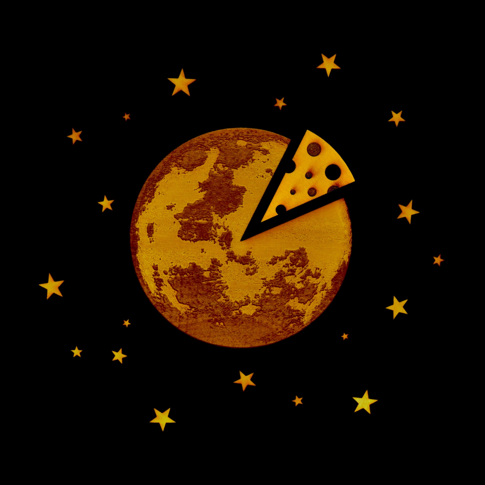
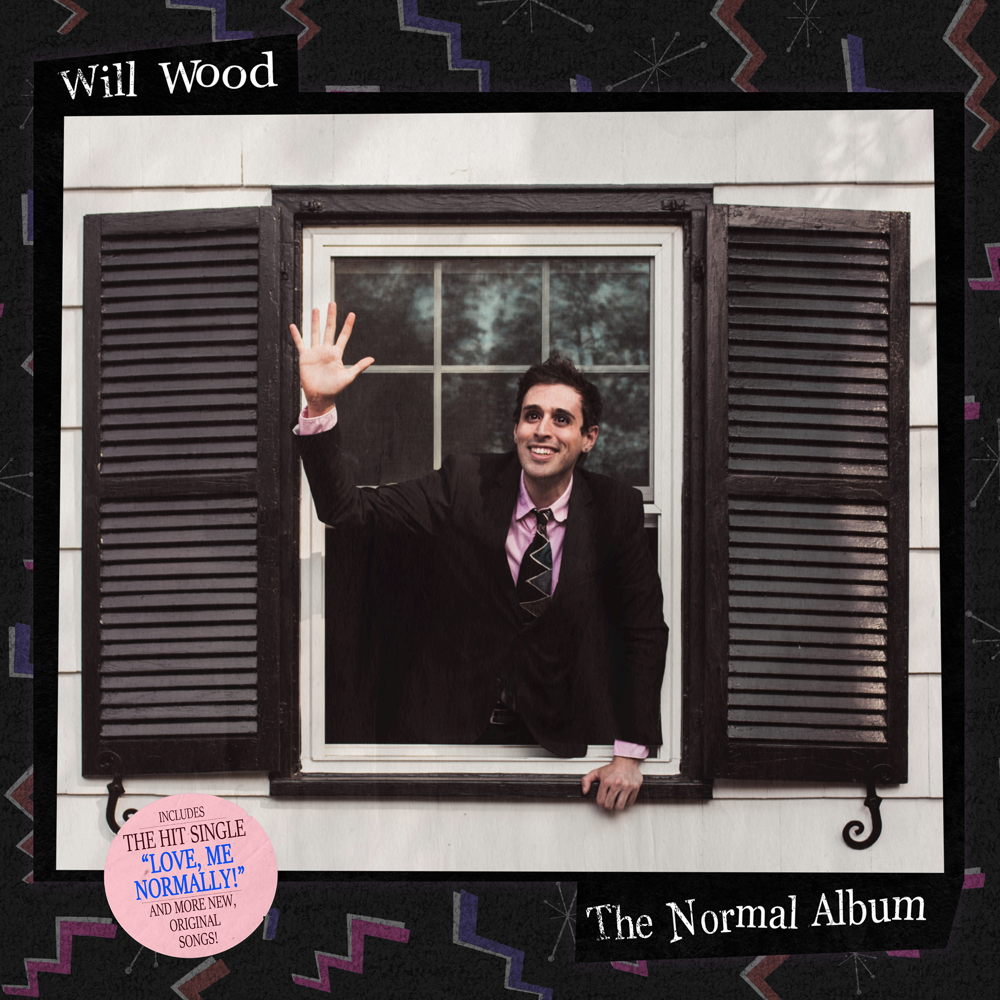
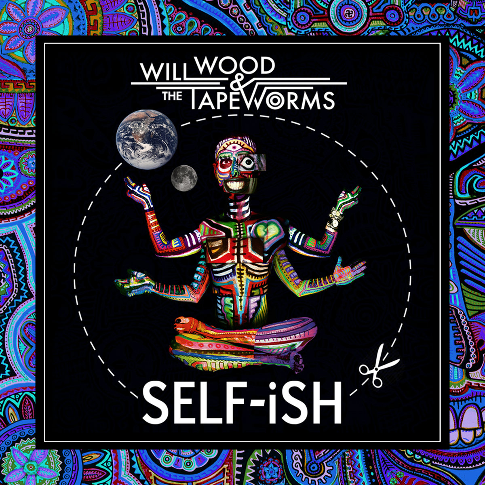
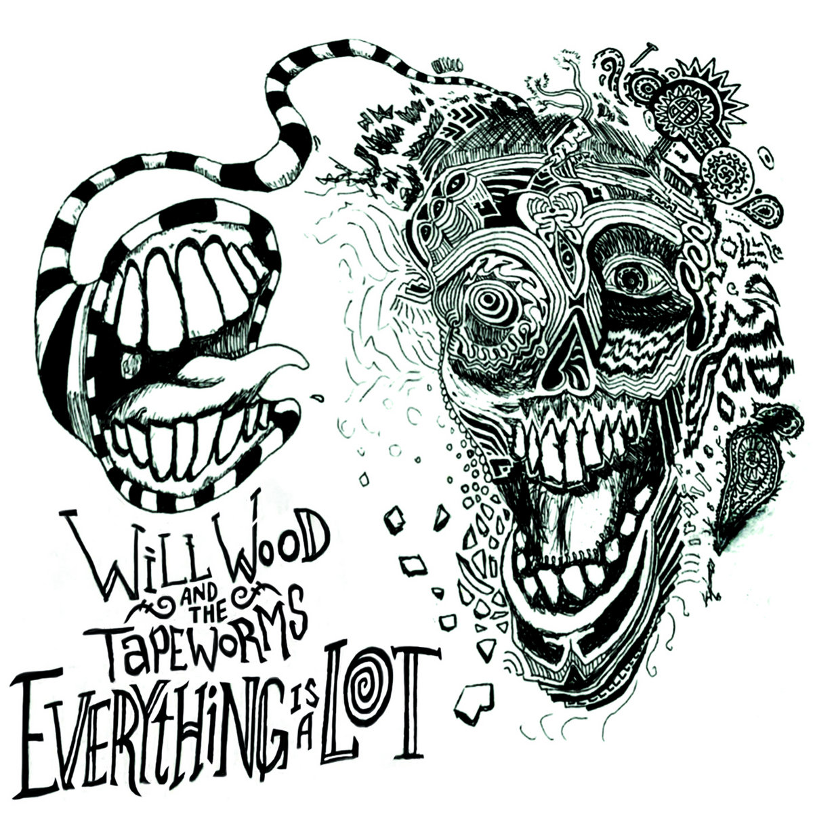

Introduction
! DISCLAIMER !
Some of the songs that are included in this website may contain expletive lyrics, viewer discretion is advised.
William Joseph Colligan is an American musician under the name Will Wood.
He is known for his eccentric music styles and his unique pieces of music. He
was born on July 19, 1993, and currently lives in New Jersey. He is very talented
with the ukelele and attracted many people with his playing. He often
performs with a band and has gained a large audience of all types of people
thanks to his large variety of music.
Will Wood performs with the band "Will Wood and the Tapeworms." His band consists of:
- Guitar - Mike Bottiglieri
- Alto Saxophone - Matt Berger
- Drums - Mario Conte
- Bass - Vater Boris
- Trumpet - Rob Schaefer
His band gives extremely spirited performances with many unique elements. Will Wood, with his band, fearlessly explores a wide range of genres, including rock, jazz, cabaret, and pop, creating a sonic experience that is both bizarre and emotional. Will Wood has a dedicated fanbase, affectionately known as "The Will Wood Cult." His authenticity, vulnerability, and willingness to address taboo topics have resonated deeply with listeners, fostering a sense of community and connection among his fans. Currently, Will Wood is on an indefinite hiatus, which may lead to the end of his music career. However, his music career has certainly pushed boundaries and challenged normality.
Source: Scad Radio, (https://scadradio.org/wp-content/uploads/2018/11/will-wood-and-the-tapeworms.jpg)
Throughout his career, Will Wood has released several acclaimed albums, each showcasing his evolution as an artist. From the introspective and haunting melodies of "In case I make it," to the infectious energy of The Normal Album, and the chaotic yet beautiful albums of SELF-iSH and Everything is a Lot, his discography represents a musical journey that transcends boundaries and defies expectations.
Albums
| Album | Album Cover |
|---|---|
| "In case I make it," |  |
| The Normal Album |  |
| SELF-iSH |  |
| Everything is a Lot |  |